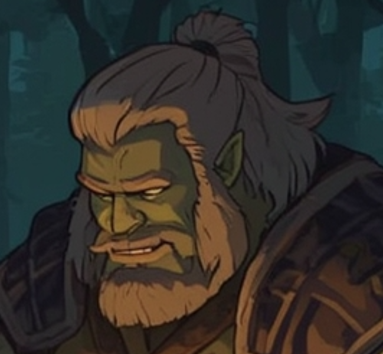

💪 Thargan Stonespine / Elder Orc Barbarian (Lvl 3)

🧾 Summary:
An aged but not slowed barbarian. Once a tribe leader, now guides young adventurers. Taciturn but charismatic, a figure who quietly carries the weight of the past. Comfortable in the wild but stands like a wall when protecting camp companions.
Role: Physical Powerhouse / Wilderness Guide
🛡️ Abilities:
- Rage (2x per day)
- Expertise in Athletics and Nature
- Primitive healing and camp management
🪓 Equipment:
- Heavy hide armor
- Great axe/hammer (possibly looks like a warhammer in the image)
- Map and dried meat in backpack
🎲 Hobbies:
- Carving sculptures from tree bark
- Experimenting with dried meat recipes
- Silent nature walks
- Quietly watching the campfire
Note: "I don't speak much but know this - I'm the expert. I know the way, I crush the creatures."
© 2025 Fantasy Adventures - All Spells Reserved | Created by Umut Kurt